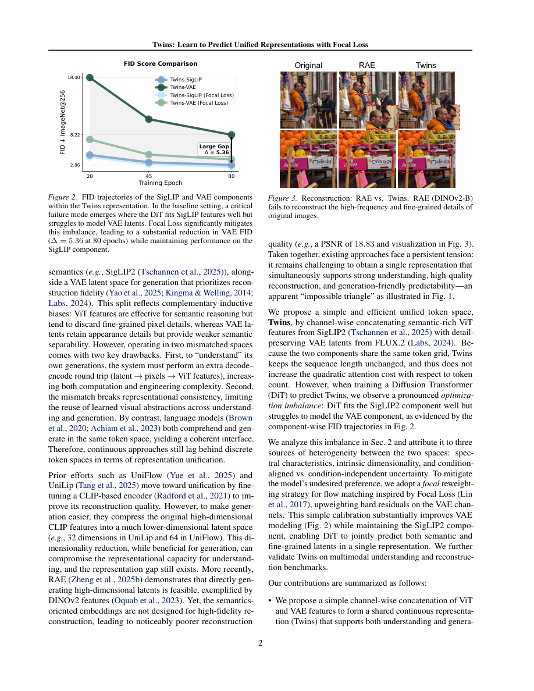

#1
★ 7/10
Twins: Learn to Predict Unified Representations with Focal Loss
Twins：用焦点损失学习预测统一表征

图 Figure · Page 2 of paper
🎯 将看图和画图的AI能力融合进同一个"语言"，用焦点损失解决优化失衡
Twins unifies image understanding and generation in one continuous token space by fusing ViT and VAE features with a focal loss to fix optimization imbalance.
🗣️ 一句话比喻 · Plain-English Analogy就像训练一个人同时用左手弹旋律、右手弹低音——通常他会越来越擅长容易的旋律，却越来越忽视难搞的低音。Twins就像一个聪明的节拍器，能自动检测"你的低音弹得很差"，然后强迫你多练低音，直到两只手都同样厉害。Think of it like training one musician to play both the melody and the bass line at the same time — normally they'd keep practicing the easy melody and ignore the tricky bass. Twins is like a smart metronome that says "hey, you're messing up the bass — focus there!" until both hands are equally good.
| 维度 | 中文 | English |
|---|---|---|
| ❓ 待解决 的问题 |
现在的AI模型想要同时"看懂图片"（比如回答图片相关的问题）和"画出图片"（比如生成新图），需要两套完全不同的内部表示方式——一套理解语义，一套还原像素细节。这两套系统很难兼容，就像一个翻译同时要处理诗歌和工程图纸一样，风格完全对不上。更糟糕的是，当你把它们强行合并训练时，模型会偏心：学好了看图，却画不好图。 | Current AI models that try to both understand images (like answering questions about a photo) and generate images (like creating new artwork) need two separate internal "languages" — one for understanding meaning and one for pixel-level detail. These two languages don't mix well, so building a single model that does both is messy and inefficient. It's like trying to have one translator handle both spoken poetry and technical blueprints — the styles just clash. |
| 💡 解决 的亮点 |
• 创新的"Twins"Token：把理解型特征（ViT）和生成型特征（VAE）在同一个空间格子上按通道拼接，序列长度不变，计算量不增加。 • 深入诊断了三大优化失衡根源：频率偏差、内在维度差异，以及两类特征不同的不确定性来源。 • 为流匹配设计了焦点回归损失（focal regression loss）：自动给学得差的VAE维度分配更多训练注意力，平衡两种特征的学习进度。 | • Novel "Twins" token: ViT (understanding) and VAE (generation) features are concatenated channel-wise on the same spatial grid — sequence length stays the same, so compute cost doesn't balloon. • Diagnosed three root causes of optimization imbalance: frequency bias, intrinsic dimensionality mismatch, and different types of uncertainty between the two feature types. • Adapted focal regression loss for flow matching: automatically gives more training attention to the harder-to-learn VAE dimensions, balancing the learning between both feature types. |
| 🧪 实验 内容 |
实验在ImageNet上测试图像生成质量，用gFID指标衡量（越低越好，反映生成图片的真实感）。同时在标准多模态理解基准（如视觉问答VQA、图片描述、推理任务等）上测试统一表征是否损害理解能力。还专门测试了图像重建保真度（从Token还原图片的质量）。基线对比包括朴素MSE损失训练方案以及使用分类器自由引导（CFG）的模型。 | Experiments were run on ImageNet for image generation quality, measured by gFID (lower is better — measures how realistic generated images look). The model was also evaluated on standard multimodal understanding benchmarks (like VQA, captioning, and reasoning tasks) to check if the unified representation hurts understanding ability. Reconstruction fidelity (how well the model can reconstruct an image from its token) was also measured. Baselines included naive MSE loss training and models using classifier-free guidance. |
| 📊 实验 结果 |
在ImageNet上，使用焦点回归损失的Twins模型相比朴素MSE损失（无分类器自由引导）取得了高达10.57 gFID的提升。在多模态理解基准测试上，Twins依然保持竞争力，说明统一Token空间没有损害理解能力。图像重建保真度也有所提升，缩小了理解导向和生成导向表征之间的差距。 | On ImageNet, Twins with focal regression loss achieves up to 10.57 gFID improvement over naive MSE loss without using classifier-free guidance. The model also performs competitively on multimodal understanding benchmarks, showing that the unified token space does not hurt comprehension tasks. Reconstruction fidelity is also improved, narrowing the gap between understanding- and generation-oriented representations. |
| 🏁 结论 | Twins证明了图像理解和生成可以共享同一个连续Token空间，无需额外计算成本，而精心设计的焦点损失能有效解决以往联合训练中的优化失衡问题。这让统一多模态AI向实用化迈进了重要一步。 | Twins proves that image understanding and generation can share a single continuous token space without extra compute, and that a carefully designed focal loss can resolve the training imbalance that previously made this difficult. This brings unified multimodal AI a meaningful step closer to practical deployment. |
| 🔗 论文 链接 |
arXiv: 2607.22531v1 · 📥 PDF | |
⚙️ Method · 方法详解
核心思路是把两种图像特征"粘"在一起——ViT特征（擅长理解图片语义）和VAE特征（擅长还原像素细节）——在通道维度上拼接成一个统一的"Twins" Token。这样做Token数量不变，模型计算量不会增加。然后用一个扩散Transformer来学习预测这些组合Token。问题是模型天生会偏向更容易学的ViT部分，忽略更难的VAE部分。为了解决这个问题，作者借用了目标检测中"焦点损失"的思路——原本用来让模型多关注难检测的目标——改造成回归版本：VAE特征中预测误差大的维度会自动获得更高权重，迫使模型认真对待它们。
The key idea is to glue together two types of image features — ViT features (great for understanding what's in an image) and VAE features (great for reconstructing pixel details) — into one combined "Twins" token by stacking them side by side in the channel dimension. This keeps the number of tokens the same, so the model doesn't get slower. Then, a Diffusion Transformer is trained to predict these combined tokens. The catch is that the model naturally gets good at the ViT part and ignores the harder VAE part. To fix this, the authors borrow the idea of "focal loss" from object detection — originally designed to focus on hard-to-detect objects — and adapt it for this regression task. Dimensions of the VAE features that the model gets wrong by a large margin get automatically upweighted in the loss, forcing the model to pay more attention to them.
📐 Key Formulas · 关键公式
\[\mathcal{L}_{\text{focal}} = \sum_{i} \left|e_i\right|^{\gamma} \cdot (v_t - v_\theta)_i^2\]
💡 焦点回归损失：对每个特征维度i，用预测误差的大小（|e_i|的γ次方）作为权重，乘以该维度的均方误差。误差越大的维度权重越高，迫使模型更努力地学习那些它目前做得很差的VAE特征维度。
Focal regression loss: for each feature dimension i, weight the squared error by the magnitude of the error raised to power γ. Dimensions where the model is making big mistakes automatically get a higher weight, forcing the model to focus on the hard VAE dimensions it keeps getting wrong.
🌟 Why It Matters · 为什么重要
当今的AI助手通常需要分别部署理解和生成图像的专用模型，成本高且复杂。Twins朝着"一个模型同时做好两件事"迈出了关键一步，未来的AI助手将更聪明、更便宜，还能完成"看这张照片，帮我画一张更好的"这类复合任务。
Today's AI assistants often need separate specialized models to understand AND create images, which is expensive and complex. Twins moves toward a single model that does both equally well — making future AI assistants smarter, cheaper, and more capable of tasks like "look at this photo and draw me a better version of it."